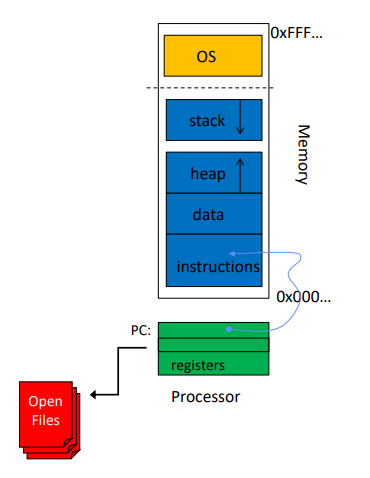

Virtualization
Key points
- OS provides a batch of virtual memory to all programs. This means that two programs, in their own context, can have the same address for a variable, but in reality the addresses are being translated by the OS.
- Why virtual memory?
- Memory protection becomes easier.
- Decoupling makes management simple.
- Space sharing - running two 3GB program with only 4 GBs RAM
Virtualizing CPU
- CPUs are virtualized using Time Sharing.
- Time Sharing is running a process, pausing it and then running another process.
Time Sharing vs Space Sharing
-
Time Sharing is allowing the resource to be used for a little while by one entity, and then a little while by another, and so forth.
-
Space Sharing, where a resource is divided (in space) among those who wish to use it. For example, disk space is naturally a spaceshared resource; once a block is assigned to a file, it is normally not assigned to another file until the user deletes the original file
Program Sate
- Everything that a program needs and uses to execute.

Address Space
- What a program can read or update in memory (RAM) when it is running.
Registers
- Program counter
- Stack Pointers
- Primitive Registers
I/O Information
- File descriptor table
Context Switching (Basics)
- Context Switching is implemented by saving and loading the program states of different programs.
Program Control Block (PCB)
- A list of structs of all the relevant information (program state) about a process.
Switching
- PCBs are used for context switching. One programs PCB is saved and another programs PCB is loaded to switch the context.
- It takes time to change context, so it is not trivial to decide whether to switch the context or not.
How often to context switch?

Process States

Running
- A process is running on the processor.
Ready
- Process is ready to run on the processor but for some reason the IS has chosen not to run it.
Blocked
- A process has performed some kind of operation that makes it not ready to run until some other event takes place.
- Example: Waiting for an I/O operation to complete.
Scheduling & De-scheduling
- Being moved from ready to running means the process has been scheduled.
- Being moved from running to ready means the process has been de-scheduled.
Process Creation
- Load a program code into memory, into the address space of the process
- Programs initially reside on disk in executable format.
- OS perform the loading process lazily. (Loading pieces of code or data only as they are needed during program execution.)
- The program’s run-time stack is allocated.
- Use the stack for local variables, function parameters, and return address.
- Initialize the stack with arguments →
argcand theargvarray ofmain()function.
- The programs heap memory is initialized.
- Used for explicitly requested dynamically allocated data.
- Program request such space by calling
malloc()and free it by callingfree().
- Initialize I/O; File descriptors →
STDIN,STDOUTandSTDERR - Start the program running at the entry point, namely
main().- The OS transfers control of the CPU to the newly-created process.
Processes in Linux
- In linux the processes are called tasks.
- The linux kernel stores the tasks in a circular doubly linked list called task list.
- Each element in the list is a process descriptor of type
struct task_structdefined inlinux/sched.h
Process API
fork()exec()wait()
How does exec() work?
- If exec successfully parsers, it replaces the the current process with a new process (one passed through args) and execution continues from the main of the new program.
- The complete memory of the calling process is replaced except the file descriptors.
Resource Protection
Direct Execution
- Just run the program directly on the CPU.
- This technique is simple and results in amazingly fast program execution, but this way the program runs with no restriction i.e. having full control of the CPU, memory and IO resources.

Problems
- Monopolize system resources - CPU
- Uncontrollable access to I/O
- Illegal memory access
Limited Direct Execution
- What we want is to allow a process to perform I/O and some other restricted operations, but without giving the process complete control over the system.
- A mode bit specifies a programs privileges and is used to transfer resource control in a protected way to the process.
Mode Bit
- User mode → Hardware
- Applications do not have full access to hardware resources (Can only manipulate assigned memory but nothing more)
- Kernel mode → Hardware
- Access to all the resources of the machine.
- System Call is the boundary between these modes; it transfers control between user mode and kernel mode.
- Upon creation of a process, each process gets a kernel stack and a user stack.
- The user stack is used for normal program execution.
- The kernel stack is used when the OS is serving a system call from that process.
trap
- To execute a system call, a process must execute a special
trapinstruction with a system-call-number - The
trapinstruction:- Jumps into kernel and set the bit to kernel mode
- Pushes the registers on to the process’s kernel stack
- OS performs the requested service in privileged mode
- OS calls a
return-from-trapinstruction- Return to caller process and set the bit to user mode
- Pop the register values from the process’s kernel stack
How does trap work?
- OS sets up a trap table at boot time in privileged mode and registers it with the hardware.
- The trap table tells the hardware knows that given a system-call number, what specific block of instruction to jump to and execute.
- A System-call number is assigned to each system call which acts like a kind of an index in the trap table.
- OS examines this number, ensures its valid, executes the corresponding code
- User can only specify the call number and does not know where to jump to - Protection of OS memory

Switching Between Processes
Cooperative Approach
- OS trusts the processes to periodically give up CPU by:
- making a system call
- doing something illegal (illegal memory access)
Non Cooperative Approach
- During the boot sequence, the OS starts a timer.
- The timer raises an interrupt every few milliseconds.
- On a timer interrupt:
- The currently running process is halted.
- A pre-configured interrupt (trap) handler in the OS runs.
- CPU control is given up by the program.
Context Switching (Steps)
- Time interrupt fires – like the execution of a trap instruction.
- Save user register values of Process A on to its kernel stack.
- Handle the trap – switch().
- Save the kernel register values of the Process A in the PCB.
- Restore the kernel register values of the Process B from the PCB.
- Execute return-from-trap.

Scheduling (based on Turnaround Time)
Turnaround Time
Fairness (in context of scheduling)
- Every workload gets an equal Turnaround Time.
FIFO (First in, First Out)
-
First Come, First Served

-
Performs poorly if the first process runs for a long time.

SJF (Shortest Job First)
- The shortest job is processed first, then the next shortest and so on.

- Performs poorly when jobs arrive at different times, and the first and only arrived job happens to be the longs in the whole set of jobs.


STFC (Shortest Time-to-Completion First)
- When a new job enters the system:
- Determine remaining time of each job
- Schedule the job which has the least time left


Note
Techniques like STFC and SJF optimizes for turnaround time but perform poorly for response time.
Scheduling (based on Response Time)
Response Time
- The time from when the job arrives to the first time it is scheduled
RR (Round Robin) scheduling
- Run a job for a time slice and then switch to the next job in the run queue until the jobs are finished.
- Time slice is sometimes called a scheduling quantum.
- The length of a time slice must be a multiple of the timer-interrupt period.
- E.g. if the timer interrupt runs every 10 ms, the time slice could be 10, 20 or any multiple of 10.

Note
RR is great for response time but performs poorly on metrics like turn around time.
- waiting time =Completion time - (Arrival time + execution time)
Context Switch Cost
- The time it took to save and load registers
- Cold cache resulting from a new context.
Time Slice Length
| Shorter Time Slice | Longer Time Slice |
|---|---|
| Better response time | Worse response time |
| The cost of context switching will dominate overall performance | Amortize the cost of switching |
Managing I/O (with STFC)
- Assume that there a process that takes 50ms to run, but makes an I/O request that takes 10ms to run after every 10ms, i.e. a I/O operation after every 10ms sub-job.
- STFC will treat the 10ms sub-jobs of the process as independent processes and schedule accordingly.
- (Check book)

Multilevel Feedback Queue (MLFQ)
- A Scheduler that learns from the past to predict the future
- Without any knowledge of the process, MLFQ:
- Optimizes turnaround time → Run shorter jobs first
- Minimizes Response Time
Queues
- The MLFQ has a number of distinct queues, each assigned a different priority level.
- At any given time, a job that is ready to run is on a single queue.
- MLFQ uses priorities to decide which job should run at a given time - a job with higher priority (i.e., a job on a higher queue) is chosen to run.
- Of course, more than one job may be on a given queue, and thus have the same priority. In this case, we will just use round-robin scheduling among those jobs.
- Thus, we arrive at the first two basic rules for MLFQ:
- Rule 1: If Priority(A) > Priority(B), A runs (B doesn’t).
- Rule 2: If Priority(A) = Priority(B), A & B run in RR.
- The high-priority queues → Short time slices
- E.g., 10 or fewer milliseconds
- The Low-priority queue → Longer time slices
- E.g., 100 milliseconds

Priority
- Rather than giving a fixed priority to each job, MLFQ varies the priority of a job based on its observed behavior.
- If, for example, a job repeatedly relinquishes the CPU while waiting for input from the keyboard, MLFQ will keep its priority high, as this is how an interactive process might behave.
- If, instead, a job uses the CPU intensively for long periods of time, MLFQ will reduce its priority.
- In this way, MLFQ will try to learn about processes as they run, and thus use the history of the job to predict its future behavior.
Changing Priorities
- Rules related to changing priorities:
- Rule 3: When a job enters the system, it is placed at the highest priority (the topmost queue).
- Rule 4a: If a job uses up an entire time slice while running, its priority is reduced (i.e., it moves down one queue).
- Rule 4b: If a job gives up the CPU before the time slice is up, it stays at the same priority level.
Note
Check Example 1 & 2 from book
- MLFQ first assumes it might be a short job, thus giving the job high priority. If it actually is a short job, it will run quickly and complete; if it is not a short job, it will slowly move down the queues, and thus soon prove itself to be a long-running more batch-like process.
Priority and I/O
- As Rule 4b states above, if a process gives up the processor before using up its time slice, we keep it at the same priority level.
- If an interactive job, for example, is doing a lot of I/O (say by waiting for user input from the keyboard or mouse), it will relinquish the CPU before its time slice is complete; in such case, we don’t wish to penalize the job and thus simply keep it at the same level.
Problems
- Starvation - if there are “too many” interactive jobs in the system, they will combine to consume all CPU time, and thus long-running jobs will never receive any CPU time.
- Gaming - A normal program can issue an I/O operation before the time slice is over thus relinquishing the CPU; doing so allows you to remain in the same queue, and thus gain a higher percentage of CPU time.
- A program may change its behavior over time; what was CPU bound may transition to a phase of interactivity. With our current approach, such a job would be out of luck and not be treated like the other interactive jobs in the system.
Priority Boost (Fixing Problem 1 & 3)
- Periodically boost the priority of all the jobs in system.
- Rule 5: After some time period S, move all the jobs in the system to the topmost queue.
- How often to boost the priority of jobs?

Better Accounting (Fix Problem 2)
- Instead of forgetting how much of a time slice a process used at a given level, the scheduler should keep track.
- Once a process has used its allotment, it is demoted to the next priority queue. (Whether it uses the time slice in one long burst or many small ones does not matter.)
- We thus rewrite Rules 4a and 4b to the following single rule:
- Rule 4: Once a job uses up its time allotment at a given level (regardless of how many times it has given up the CPU), its priority is reduced (i.e., it moves down one queue).
- Allotment Size?

MLFQ Summary

Proportional-Share - Lottery Scheduling
- Guarantee that each job obtain a certain percentage of CPU time
- Not optimized for turnaround or response time.
Tickets
- Represent the share of a resource that a process should receive
- The percent of tickets represents its share of the system resource in question
- Example: There are two processes, A and B
- Process A has 75 tickets → receive 75% of the CPU
- Process B has 25 tickets → receive 25% of the CPU
- Winning Ticket: One of the total distributed tickets is the winning ticker
- The scheduler holds a lottery (every so often), picks the process with the winning ticket. Then loads the state of the winning process and runs it.
- In the example below A holds ticket 0-75 and B holds 76-100.

- The longer these two jobs compete, the more likely they are to achieve the desired percentages.
Implementation
- We need
- Number of tickets
- Random number generator
- Linked list to track process and tickets

Fairness
- F: fairness metric - The time the first job completes divided by the time that the second job completes.


Problem
- Assigning tickets is not trivial.
- Lottery Algorithm is not deterministic.
Stride Scheduling
Stride
- A value assigned to each job
- Inversely proportional to the number of tickets
Example
- Processes A (100 tix), B (50 tix), C (250 tix)
- Use a large number, say 10,000 to calculate stride
- Divide 10,000/ no of tickets, to calculate the stride of each process (A will have 100, B will have 200, C will have 40)
- Every time a process runs, its pass is increment by its stride
- Run the process that has the lowest pass value

Note
The results of stride scheduling are the same as the results of Lottery Scheduling. The only difference is that stride scheduling is deterministic.
Why Lottery when Stride?
- Lottery Scheduling does not have any global state.
- Imagine a new job enters in the middle of our stride scheduling example above; what should its pass value be? Should it be set to 0? If so, it will monopolize the CPU.
- With lottery scheduling, there is no global state per process; we simply add a new process with whatever tickets it has, update the single global variable to track how many total tickets we have, and go from there.
- In this way, lottery makes it much easier to incorporate new processes in a sensible manner.
Linux Completely Fair Scheduler (CFS)
- Spend very little time in making scheduling decisions.
- Non-fixed timeslice.
- Enables control over priority by using nice value
- Employs efficient data structure for efficient search, insertion and deletion of a process.
Virtual Runtime (vruntime)
- Track how long each process has been executing for in a process specific variable
- Increase the variable in proportion with physical (real) time when a process runs
- When a scheduling decision occurs, CFS will pick the process with the lowest
vruntimeto run next.
When to switch?
- Often switches → More fairness
- Less switches → More performance
sched_latency= 48ms → timeslice = sched_latency/nmin_granularity= 6ms → min timeslice (for when there are too many processes)
Note
Check Book Page 8
Weighting (Niceness)
- The nice parameter defines priority.
- IT can be set anywhere from -20 to +19 for a process, with a default of 0
-
- : lower priority
-
- : higher priority
- CFS maps nice values to weights, which are used to calculate time slice.


- weight0 is the weight of the default priority (0).
-
here runtime is the actual time that the job ran; vruntime is the scaled amount.


Data Structures - Efficiency
- Point: When the scheduler has to find the next job to run, it should do so as quickly as possible.
- For this the OS uses Red-Black Trees which are:
- Balanced binary tree (keep depth low)
- Operations take O(log n) (efficient)
- Sleep and I/O bound resources are handled differently to avoid monopolization.

Multiprogramming and Time Sharing
- Load multiple processes in memory
- Execute each of them for a short while
- Switch between them to increase utilization and efficiency
Problem
- Memory Protection: Errant memory access from other processes.

Address Spaces
- An abstraction of physical memory
- A program’s view of memory in the system
- Code
- Where instructions live
- Heap
- Dynamically allocate memory
-
Stack
- Store return addresses and values
- local variables and arguments to routines

Virtual Address Space
- Every program is given a virtual address space which it thinks of as the actual memory but in reality OS is just mapping the virtual address of a program to a physical space in memory.
- A program is not aware of the fact that its memory is being virtualized
- Some goals of Virtual Address Space are:
- Transparency
- Efficiency
- Protection
Components of Virtual Address Space

- Data: For defined global variables
- BSS: For undefined global variables
Address Translation
- Hardware transforms a virtual address to a physical address.
- Memory virtualizing takes a similar strategy known as limited direct execution (LDE) for efficiency and control.
Dynamic Reallocation - (Base & Bound)


Storing Bound Register (2 ways)

Context Switching

Note
See summary of chapter from book
Problems
- Internal Fragmentation
- Big chunk of free space between heap and stack
- Wastage of memory
- Can not run a program when address space does not fit into physical memory
Segmentation
- A segment is a contiguous portion of the address space of a particular length.
- Segmentation allows the OS to do is to place each one of those segments in different parts of physical memory, and thus avoid filling physical memory with unused virtual address space.
- Now the instead of storing 1 base bound pair, OS stores 3 for:
- Code
- Stack
- Heap

Translation (code)
- Example:

Translation (heap)

Note
In context of memory K = 1024
Which Segment Are We Referring To?


Stack and Segments
- Stack grows backwards (towards smaller addresses)
- Extra hardware support is needed to store that information


Note
The Max Seg Size - Offset is Ratta
Support for Sharing
- Sometimes it is useful to share certain memory segments between address spaces.
- Hardware support is needed in the form of protection bits to indicate permissions of read, write and execute.
- In addition to checking whether a virtual address is within bounds, the hardware also has to check whether a particular access is permissible

Fine-grained vs Coarse-grained
| Coarse | Fine |
|---|---|
| small number of segments | allows more flexibility for address space |
| code, heap, stack | hardware support with a segment table is required |
Fragmentation
- With variable segment size, physical memory quickly becomes full of little holes of free space
- External Fragmentation: little holes of free space in physical memory that is too small for allocating segment
- There is 24KB free, but not in one contiguous segment
- The OS cannot satisfy the 20KB request
Free Space (in context of user-managed memory)
- Chunks of unallocated heap memory.
- OS manages memory using segmentation while user’s heap is managed by a user-level memory allocation libraries (
malloc()andfree()inlibc). - If the free space gets chopped into many little variable sized pieces (after multiple
malloc()calls), subsequent requests might fail because there is no single contiguous space that can satisfy the request.
Note
Internal fragmentation can also occur if the allocator hands out a larger size of memory than the requested size.
Splitting and Coalescing

Splitting
- Assume we have a request for just a single byte of memory. In this case, the allocator will perform an action known as splitting:
- it will find a free chunk of memory that can satisfy the request and split it into two.
- the first chunk it will return to the caller; the second chunk will remain on the list.
Coalescing
-
Given this (tiny) heap, what happens when an application calls free(10), thus returning the space in the middle of the heap?
- If we simply add this free space back into our list without too much thinking, we might end up with a list that looks like this:

-
While the entire heap is now free, it is seemingly divided into three chunks of 10 bytes each. Thus, if a user requests 20 bytes, a simple list traversal will not find such a free chunk, and return failure.
- To solve the issue we can coalesce by following these steps:
- look carefully at the addresses of the chunk you are returning as well as the nearby chunks of free space
- if the newly freed space sits right next to one (or two, as in this example) existing free chunks, merge them into a single larger free chunk

How does free() know how much to free?
- The information about the allocation size is kept in a header block, which is kept just before the handed-out chunk of memory.


- the
magicnumber is for integrity checks. - on a call to
free()we can check the header and figure out the size:
void free(void *ptr) {
header_t *hptr = (header_t *) ptr - 1;
...
assert(hptr->magic==1234567);
...
}
- Because we are storing the header in the handed-out chunk, we have to keep the size of the header in account:
Embedding free list
- In the library you can’t call malloc to get more space.
- You have to embed the “free list” within the available space.
- (See Slides and Book)
Ran out of heap
- Return
NULL. - Call
sbrk()to grow heap.
Basic Strategies
- Finding the most optimal free chunk.
Best fit
- Search through the free list and find chunks of free memory that are as big or bigger than the requested size.
- Return the one that is the smallest in that group of candidates.
- Advantage: Returns the most optimal chunk
- Drawback: Searching through the list is slow.
Worst fit
- Find the largest chunk and return the requested amount.
- Keep the remaining (large) chunk on the free list.
- Advantage: Freeling space will create larger chunks through coalescing.
- Drawback: A complete search of the list is still required and thus its slow
First Fit
- Finds the first block that is big enough and returns the requested amount to the user.
- Advantage: Search on average is fast.
- Drawback: Pollutes the beginning of the free list with small objects.
Advanced Strategies
Segregates Lists
- Maintain multiple free lists for tracking free spaces.
- One for popular-size requests:
- Advantages:
- No exhaustive search needed for popular-size requests
- No fragmentation for
- One for general allocation
Buddy Allocation
- Designed to simplify coalescing
Slicing
- Free memory is first conceptually thought of as one big space of size \(2^N\).
- When a request for memory is made, the search for free space recursively divides free space by two until a block that is big enough to accommodate the request is found.
- The found chunk of memory is returned to the user.

Coalescing
- When returning the 8KB block to the free list, the allocator checks whether the “buddy” 8KB is free. If so, it coalesces the two blocks into a 16KB block.
- The allocator then checks if the buddy of the 16KB block is still free; if so, it coalesces those two blocks.
Problems
- Internal Fragmentation because we can only divide memory into chucks of \(2^x\).
Note
It is very simple to determine the buddy of a particular block. The buddies only differ by a single bit.
Paging
Review: Base Bound
- Give each program a fixed sized memory block.
- Big chunk of free space in the middle → needlessly consume memory
- Internal Fragmentation
- FIXED SIZE SOLUTION

Review: Segmentation
- Divide the address space in logical segments (code, stack, heap) of the memory and separately allocate memory to each segment.
- We will need three sets of base-bound registers.
- Allows more fine grained control over allocation.
- External Fragmentation
- VARIABLE SIZE SOLUTION
Paging - INTRO
- Page → a fixed-sized memory unit in virtual memory
- Page Frame → a fixed-sized memory unit in physical memory
- We view physical memory as an array of fixed-sized slots called page frames; each of these frames can contain a single virtual-memory page.

Problem Paging will solve
- Flexibility: the system will be able to support the abstraction of an address space effectively, regardless of how a process uses the address space; we won’t, for example, make assumptions about the direction the heap and stack grow and how they are used.
- Simplicity: It becomes very easy to manage free space (using a freelist of free pages perhaps)
- The virtual address space will stay contiguous but its mapping can be scattered in the physical memory. Assigning pages is easier as pages are fixed size and its easy to find free pages.
Page Table
- Address Translation is performed using per-process page table.

- Virtual Address Space → the virtual memory for our program will also be divided into (contiguous) Pages. These pages will exist in the physical memory as Page Frames.

- We can go from Pages to Page frames using the Address table above:

- Page 0 is in Page Frame 3; Page 1 is in Page Frame 7;
Address Translation
- PDF: Page 3
VPN and Offset
- VPN = Virtual Page Number; PFN = Physical Frame Number
- We need to know:
- Size of total VIRTUAL address space → Size of address
- address space 64 bytes, 6 bites ( 2^6 = 64)
- Size of Page → Size of offset
- if page is 16 bytes, offset will be 4 bit
- Number of Pages in VIRTUAL address space → Size of VPN
- if 4 pages, VPN is 2 bit

- The MSB bits becomes the VPN.
- VPN tells us which page to address and offset tells us which specific byte in the page we want to address.
- We can use the Page table to convert VPN to PFN and thus address the physical memory.

Page Tables are large
- Page Tables can become larger than Segment Tables (Segmentation) & Base/Bound Pairs so they need to be stored in the memory themselves.
- Page tables have to store every one to one mapping for all pages of a process.
Contents of Page Tables & PTE
- Linear Page Table
- Data Structure: Array
- Indexed via VPN
- Each index stores page-table entry (PTE)
- PTE:
- Valid Bit: Indicating whether the translation is valid
- Protection Bit: Indicating whether the page could be read from, written to, or executed from
- Present Bit: Indicating whether this page is in physical memory or on disk (swapped out)
- Dirty Bit: Indicating whether the page has been modified since it was brought into memory
- Accessed/Reference Bit: Indicating that a page has been accessed (useful in determining which pages are popular and thus should be kept in memory)
Note
Valid Bit is sometimes not used. Present Bit tells the OS if a page is present or not. If a page is present than its also valid. If a page is not present of the OS needs to then validate the Page using extra Data Structures and then load if valid.

Page Tables are Slow
- For every memory reference, paging requires the hardware to perform one extra memory reference.
- One memory reference to get the Page Frame Number
- One memory reference to access the physical memory to get the data
- Memory access operations are costly.
- (Check Memory Trace from Book)
Note
Allocation on First Touch: Physical memory is only allocated once a process access the corresponding virtual memory for the first time Unused pages Reclaimed: The pages may me swapped into disc if not used for long time and then must be reclaimed
TLB(translation-lookaside buffer) - Faster Translations
- Part of the systems memory-management unit (MMU)
- It is simply a hardware cache.
- Upon each virtual memory reference, the hardware first checks the TLB to see if the desired translation is held therein ; if so, the translation is performed (quickly) without having to consult the page table (which has all translations)
The algorithm the hardware follows works like this: first, extract the virtual page number (VPN) from the virtual address (Line 1 in Figure 19.1), and check if the TLB holds the translation for this VPN (Line 2). If it does, we have a TLB hit, which means the TLB holds the translation. Success! We can now extract the page frame number (PFN) from the relevant TLB entry, concatenate that onto the offset from the original virtual address, and form the desired physical address (PA), and access memory (Lines 5–7), assuming protection checks do not fail (Line 4).
If the CPU does not find the translation in the TLB (a TLB miss), we have some more work to do. In this example, the hardware accesses the page table to find the translation (Lines 11–12), and, assuming that the virtual memory reference generated by the process is valid and accessible (Lines 13, 15), updates the TLB with the translation (Line 18). These set of actions are costly, primarily because of the extra memory reference needed to access the page table (Line 12). Finally, once the TLB is updated, the hardware retries the instruction; this time, the translation is found in the TLB, and the memory reference is processed quickly.
- TLB improves translation times by:
- Spatial Locality (accessing elements of an array)
- Temporal Locality (accessing variable which was recently accessed
Note
Larger Page Size, less number of misses.
Who Handles The TLB Miss?
CISC & Hardware Managed TLB Tables
- Hardware handles the TLB misses.
- Hardware needs to know:
- Where the page table is (page table base register)
- Exact format of the page table
- On a miss, the hardware would “walk” the page table, find the correct page table entry, extract the information, update the TLB and retry the instruction.
RISC & Software Managed TLB Tables
- Software (OS code in kernal mode) handles the TLB misses.
- On a TLB miss, hardware only raises an exception.
- The exception triggers the trap handler, which then executes the code to manage the TLB miss by accessing the page table, extracting the correct page table entry and using “privileged” instructions to update TLB.
- After the trap completes, the hardware retries the TLB access.
- Important Points:
- The
return-from-trapinstruction, in this case, will not resume after the instruction which caused the trap to trigger but will resume from the instruction that originally triggered the trap. (this special behavior is done by changing the PC (Program Counter) to the appropriate value) - The TLB miss-handling code itself must not cause more TLB misses, i.e. the code must not access a page whose translation is not already present in the TLB.
- The
- Pros of Software Managed TLB:
- Flexibility: OS can use any data structure
- Simplicity
TLB Contents
- A typical TLB might have 32, 64, or 128 entries.
- Fully-Associative → any given translation can be anywhere on the TLB and hardware will search the entire TLB in parallel to find the desired translation.
- A TLB entry might look like this:

TLB & Context Switching
- The TLB contains virtual-to-physical translations that are only valid for the currently running process; these translations are not meaningful for other processes.
- When switching from one process to another, the hardware or OS (or both) must be careful to ensure that the about-to-be-run process does not accidentally use translations from some previously run process.
- (See Lecture Slides for Visualization)
Flush TLB
- Flush the TLB on context switches.
- Can be done by switching all Valid bits to 0.
- Flaws:
- TLB incurs misses on context switch as the whole TLB is flushed clean
ASID (address space identifier)
- You can think of the ASID as a process identifier (PID), but usually it has fewer bits
- e.g., 8 bits for the ASID versus 32 bits for a PID

- With address-space identifiers, the TLB can hold translations from different processes at the same time without any confusion.
Note
Pages can be shared! Sharing of code pages (in binaries or shared libraries) is useful as it reduces the number of physical pages in use, thus reducing memory overhead.
Note
Valid bit in Page Table specifies if a certain page is assigned to a process or not. Valid bit in TLB specifies if a certain valid translation exists
TLB & Replacement Policy
- when we are installing a new entry in the TLB, we have to replace an old one.
LRU (least recently used)
- Evict an entry that has not recently been used.
- Take advantage of locality in the memory

Random Policy
- Evict a random entry to make space for a new
- Performs better in cases where a program access n+1 pages with a TLB size of n pages. In this case LRU will miss upon every access.
TLB Entry
- 32-bit address space with 4KB pages:

Smaller Tables
- Linear Page Tables take up too much space.
- Example:
- 32-bit address space → 2^32 addressable bytes
- 4KB pages → num pages = 2^32/4*1024 = 2^20 pages
- 4 byte per PFN → 2^20 * 4 = 4MB of space needed
Strawman: Bigger Pages
- As size of Page Table is a function of Page Size, we can increase the page size to reduce the size of page tables.
- With larger page sizes → lesser pages will be needed to store all the memory → lesser PTEs will be needed to index those pages → lower memory usage.
- Problem → wastage of memory within each page → Internal Fragmentation
Hybrid Approach: Paging + Segmentation (Intuition)
- We dont really always use all the virtual memory space (Pages). Thus there are a lot of unused and empty pages.

- With this in mind, we can segment the pages themselves, thus eliminating those unused page entries
- Why not have one page per logical segment per process?
Segmentation Walkthrough
- Each process has three-page tables, one for each logical segment
- Base register contains the physical address of a linear page table for that segment
- Bound register indicates the end of the page table → number of pages


Note
Base[SN] gives us the starting address of the page table storing the segment SN
- Unallocated pages between the stack and the heap no longer take up space in a page table
- Cons:
- Segmentation is not flexible as it assumes a certain usage pattern of the address space.
- if we have a large but sparsely-used heap, we can still end up with a lot of page table waste
- this hybrid approach causes external fragmentation to arise again; Page tables themselves will be of variable size and thus will complicate things when stored.
Multi-level Page Tables

- Removes unused or invalid page entries + does not require segmentation.
- Turns the Linear Page Table to a Tree.
- Theory:
- Chop up the page table into page-sized units.
- if an entire page of page-table entries (PTEs) is invalid (not used), don’t allocate that page of the page table at all.
- To track whether a page of the page table is valid (and if valid, where it is in memory), use a new structure, called the page directory.
Page Directory
- The page directory, in a simple two-level table, contains one entry per page of the page table.
- It consists of a number of page directory entries (PDE). A PDE (minimally) has a valid bit and a page frame number (PFN), similar to a PTE.
- If the PDE is valid, it means that at least one of the pages of the page table that the entry points to (via the PFN) is valid, i.e., in at least one PTE on that page pointed to by this PDE, the valid bit in that PTE is set to one. If the PDE is not valid (i.e., equal to zero), the rest of the PDE is not defined.
- Pros:
- Only allocated pages for the address space we are using.
- Supports sparse address spaces
- If carefully constructed, each portion of the page table fits neatly within a page, making it easier to manage memory
- Cons:
- On TLB miss, two loads from memory are required; one for the PDE and one for the PTE
- Complexity
Example
More than 2 levels
- If the Page Directory Table gets too big, it too can be stored inside another Page Directory Table.
- (Read walkthrough from the Book)
Inverted Page Tables
- Instead of having many page tables (one per process of the system), we keep a single page table that has an entry for each physical page of the system.
- The entry tells us which process is using this page, and which virtual page of that process maps to this physical page.
- Finding the correct entry is now a matter of searching through this data structure (which can be sped up using hash tables)
Swapping
- Use part of disk as memory.
- Physical memories are usually much smaller than the virtual address space
- OS need a place to stash away portions of address space that currently aren’t in great demand
Swap Space
- A reserved space on the hard disk for moving pages back and forth.
- The size of swap space defines the upper limit on the number of pages in the system
The Present Bit - TLB
- Tells the TLB if the page is present in memory or on disk.
- The act of accessing a page that is not in physical memory is commonly referred to as a page fault.
- Upon a page fault, the OS is invoked to service the page fault. A particular piece of code, known as a page-fault handler, runs, and must service the page fault.
- Page Faults are handled by OS in both hardware and software TLBs.
Page Fault Handler
- If a page is not present in memory, a page fault handler is executed by the OS.
- The Handler looks at the PFN bits of the page, which in case of swapping, store the disk address.
- When the disk I/O complete, the OS will update the page table to mark the page as present. It will also update the PFN field to record the in-memory location of the newly-fetched page, and retry the instruction.
- (The OS can also update the TLB along with the swap of the page)
Note
While the I/O is in flight, the process will be in the blocked state. Thus, the OS will be free to run other ready processes.
When to preform replacement?
Lazy Approach
- OS waits until memory is entirely full, and only then replaces a page to make room for some other page
Proactive Approach
- Activate Page Daemon when there are fewer than LW (low watermark) free pages.
- Evicts pages until there are HW (high watermark) pages available.
- Clustering can improve performance: cluster a number of pages and write them out at once to the swap partition.
Page Replacement Policy
- Our goal in picking a replacement policy for this cache is to minimize the number of cache misses (to minimize the number of times that we have to fetch a page from disk).
- Average Memory Access Time (AMAT)

Optimal Swapping Policy
- Lead to the fewest number of misses overall.
- Replaces the page that will be accessed furthest in the future.

FIFO
- Pages placed in a queue when they enter the system.
- When a replacement occurs, the page on the tail of the queue is evicted.
- Cons: Has no notion of importance of a page.

Random
- Picks a random page to replace under memory pressure.
LRU - Least Recently Used
- The more recently a page has been accessed, the more likely it will be accessed again.
- Evict the Least Recently Accessed Page.
LFU - Least Frequently Used
- Evict the least frequently used page.
Workload Examples - Notes
- All approaches will do as better as random for no-locality workloads.
- LRU performs the best in 80-20, followed by FIFO and RAND that perform the same.
Approximating LRU & Use bit
- Whenever a page is referenced, the use bit is set by hardware to 1.
- This Use bit can be used by OS to determine which page to evict.
Clock Algorithm
- Imagine all the pages of the system arranged in a circular list.
- A clock hand points to some particular page to begin with (it doesn’t really matter which). When a replacement must occur, the OS checks if the currently-pointed to page P has a use bit of 1 or 0.
- If 1, this implies that page P was recently used and thus is not a good candidate for replacement.
- Thus, the use bit for P is set to 0 (cleared), and the clock hand is incremented to the next page (P + 1).
- The algorithm continues until it finds a use bit that is set to 0, implying this page has not been recently used
Thrashing
- If a process fills up the whole memory, the OS will always be paging. This condition is called Thrashing.
- (See Book)